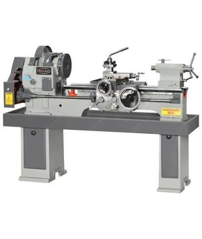
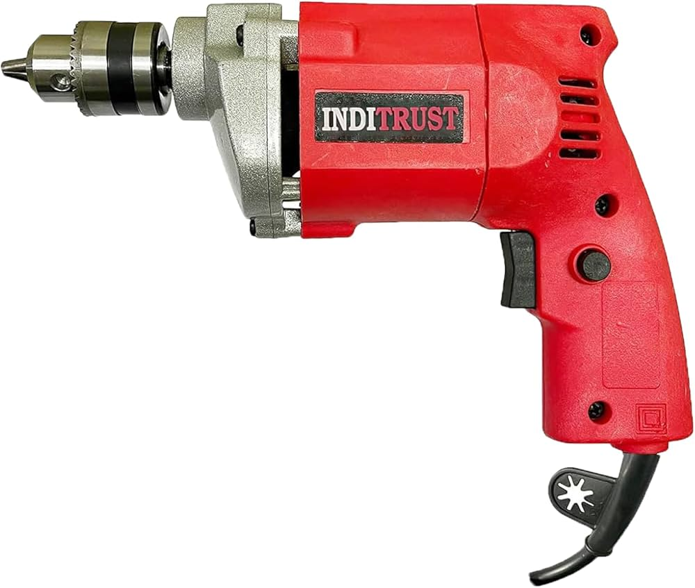
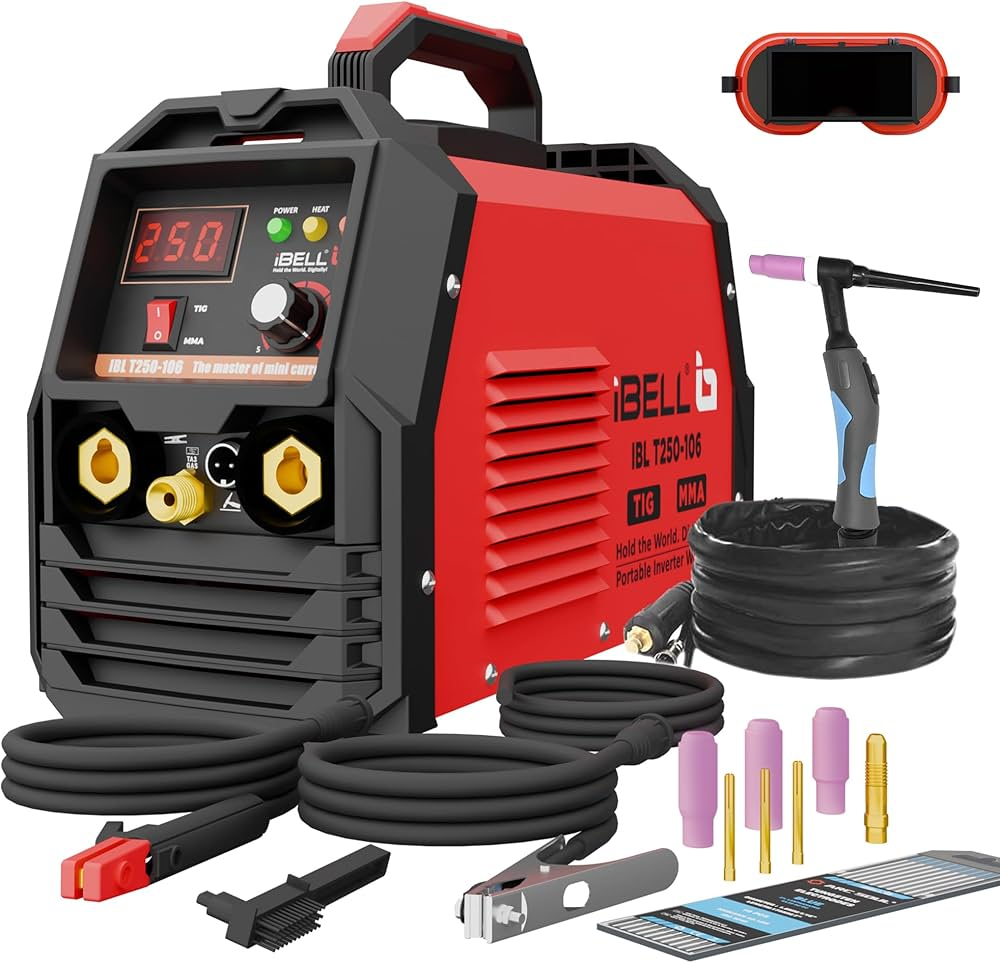

Lathe Machine

A lathe machine is one of the most important machines
used in an engineering workshop. It is mainly used to
rotate a workpiece and remove unwanted material with
a cutting tool.
The workpiece is fixed firmly in the machine and rotated
at a suitable speed. The cutting tool is then moved
against the rotating material to give it the required
shape and size.
Uses: It is used for turning, facing, drilling,
threading and cutting cylindrical components.
Applications: Lathe machines are commonly used
to manufacture shafts, bolts, screws, rods and other
machine parts.
Importance: It helps students understand machining,
measurement and the proper use of cutting tools.
Drilling Machine

A drilling machine is a workshop machine used to produce
circular holes in different materials. It is commonly
used on metals, wood and plastic materials.
The drill bit rotates at high speed and moves into the
workpiece to create a hole. Different drill bits can be
selected according to the required hole size.
Uses: It is used for drilling new holes, enlarging
existing holes and preparing holes for screws and bolts.
Applications: Drilling machines are used for making
holes in metal plates, machine parts, wooden components
and other engineering materials.
Importance: It helps students learn accurate drilling,
measurement and safe handling of workshop equipment.
Welding Machine

A welding machine is used to join two or more metal parts
permanently. Welding is an important process in engineering
and manufacturing industries.
Heat is produced using electrical energy or another suitable
method. The heat melts the joining area and forms a strong
connection after cooling.
Uses: Welding is used for joining metal sheets,
pipes, rods, frames and different machine components.
Applications: It is commonly used in construction,
automobile industries, manufacturing and repair work.
Importance: Welding helps students understand metal
joining techniques and the importance of safety while working.